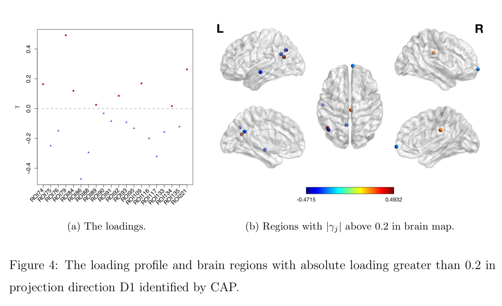

Covariance Outcome Modelling via C ovariate A ssisted
P rincipal (CAP ) Regression
Xi (Rossi) LUO
Health Science Center
School of Public Health
Dept of Biostatistics
and Data Science
ABCD Research Group
August 1, 2023
Funding: NIH R01MH126970, R01EB022911; NSF/DMS 1557467
Major Collaborators

Yi Zhao
Indiana Univ

Bingkai Wang
UMich Biostat
Yale Univ

Johns Hopkins Medicine
Brian Caffo
Johns Hopkins Biostat
Slides viewable on web:
bit.ly /capuh23
Statistics/Data Science Focuses
Resting-state fMRI Networks

- fMRI measures brain activities over time
- Resting-state: "do nothing" during scanning
- Brain networks constructed using
cov/cor matrices of time series


fMRI data: blood-oxygen-level dependent (BOLD) signals from each
Brain Networks
- Brain network analysis: an emerging trend Park, Friston, Science, 2013
- Estimating brain networks from data
- Many methodological frameworks: cov, inv cov, DCM, Granger,ICA, frenquency, dynamic...
- Our group worked on graphical models Cai et al, 2001, Liu, L, 2015, DCM Cao et al, 2019
- Also on quantifying network info flow Zhao, L, 2019, Zhao L, 2021
- On utilization of networks for clustering Bunea et al, 2020
- Tree-like networks and regression Wang et al, 2022; Zhao et al, In Press
- This talk: explaining network differences
Motivating Example
Brain network connections vary by covariates (e.g. age/sex)
Our Idea
$$\textrm{function}(\textbf{graph}) = \textbf{age}\times \beta_1 + \textbf{sex}\times \beta_2 + \cdots $$Other Related Applications
- Differences in genetic networks
- Networks by disease/age/sex groups
- Single cell sequencing
- Covariance modeling
- Temporal changes in covariance matrices
- Spatial-temporal
- Theme:
signals in thesecond moment, low/no signals in the first moment
Mathematical Problem
- Given $n$ (semi-)positive matrices, $\Sigma_i\in \real^{p\times p}$
- Given $n$ corresponding vector covariates, $x_i \in \real^{q}$
- Find function $g(\Sigma_i) = x_i \beta$, $i=1,\dotsc, n$
- In essense,
regress positive matrices on vectors
Other Extensions
- Linear model formulation, and thus very flexible
- Easily extended to big data with 1 million brain regions, Brain and Behavior
- High dim cov (later), Electronic J of Stat
- Many other extensions under review or preparation: longitudinal, mixed effects, ...
Some Related Problems
- Heterogeneous regression or weighted LS:
- Usually for scalar variance $\sigma_i$, find $g(\sigma_i) = f(x_i)$
- Goal: to improve efficiency, not to interpret $x_i \beta$
- Covariance models Anderson, 73; Pourahmadi, 99; Hoff, Niu, 12; Fox, Dunson, 15; Zou,
17
- Model $\Sigma_i = g(x_i)$, sometimes $n=i=1$
- Goal: better models for $\Sigma_i$
- Multi-group PCA, (inverse) covariance estimation/testing Flury,
84, 88; Boik 02; Hoff 09;
Franks,
Hoff, 16, Guo et al, 11; Tsai et al, 22; Cai et al, 13
- No regression model, cannot handle vector $x_i$
- Goal: find common/uncommon parts of multiple (inv) $\Sigma_i$
- Tensor-on-scalar regression Li, Zhang, 17; Sun, Li, 17
- No guarantees for positive matrix outcomes
CAP for Low-dimensional Cov Outcomes
Naive: Massive Edgewise Regressions
- Intuitive method by mostly neuroscientists
- Try $g_{j,k}(\Sigma_i) = \Sigma_{i}[j,k] = x_i \beta$
- Repeat for all $(j,k) \in \{1,\dotsc, p\}^2$ pairs
- Essentially $O(p^2)$ regressions for each connection
- Limitations:
- multiple testing $O(p^2)$
- failure to accout for dependencies between regressions
- low signal to noise ratio elementwise, spectral modeling may be more robust
Our CAP in a Nutshell
$\mbox{Modified PCA}(\Sigma_i) = x_i \beta$
- Essentially, we aim to turn unsupervised PCA to a supervised PCA
- Ours differs from existing PCA methods:
- Supervised PCA Bair et al, 06 models
scalar-on-vector
- Supervised PCA Bair et al, 06 models
Model and Method
Model
- Find principal direction (PD) $\gamma \in \real^p$, such that: $$ \log({\gamma}^\top\Sigma_{i}{\gamma})=\beta_{0}+x_{i}^\top{\beta}_{1}, \quad i =1,\dotsc, n$$
Example (p=2): PD1 largest variation in $\Sigma_i$ but not related to $x$
Advantages
- Scalability: potentially for $p \sim 10^6$ or larger
- Interpretation: covariate assisted PCA
- Turn
unsupervised PCA intosupervised
- Turn
- Sensitivity: target those covariate-related variations
-
Covariate assisted SVD?
-
- Potential applications in other big data problems besides fMRI
Method
- MLE with constraints: $$\scriptsize \begin{eqnarray}\label{eq:obj_func} \underset{\boldsymbol{\beta},\boldsymbol{\gamma}}{\text{minimize}} && \ell(\boldsymbol{\beta},\boldsymbol{\gamma}) := \frac{1}{2}\sum_{i=1}^{n}(x_{i}^\top\boldsymbol{\beta}) \cdot T_{i} +\frac{1}{2}\sum_{i=1}^{n}\boldsymbol{\gamma}^\top \Sigma_{i}\boldsymbol{\gamma} \cdot \exp(-x_{i}^\top\boldsymbol{\beta}) , \nonumber \\ \text{such that} && \boldsymbol{\gamma}^\top H \boldsymbol{\gamma}=1 \end{eqnarray}$$
- No meaningful solutions without constraints
- Two obvious constriants:
- C1: $H = I$
- C2: $H = n^{-1} (\Sigma_1 + \cdots + \Sigma_n) $
- The most natural C1 usually does
not work!
Choice of $H$
- C1 leads to
small eigen values (potential noises) - Will focus on the constraint (C2)
Algoirthm
- Iteratively update $\beta$ and then $\gamma$
- Prove explicit updates (see our papers)
- Extension to multiple $\gamma$:
- After finding $\gamma^{(1)}$, we will update $\Sigma_i$ by removing its effect
- Search for the next PD $\gamma^{(k)}$, $k=2, \dotsc$
- Impose the orthogonal constraints such that $\gamma^{k}$ is orthogonal to all $\gamma^{(t)}$ for $t\lt k$
Theory for $\beta$
Theory for $\gamma$
$\hat{ \boldsymbol{\beta}}$ from our algorithm is $\sqrt{M_{n}}$-consistent estimator of $\boldsymbol{\beta}$.
Simulations
PCA and common PCA do
Resting-state fMRI
Regression Coefficients

Age

Sex
Age*Sex
-
Ours above :significant network differences due to age, sex and their interactions - Naive massive edgewise regression:
no statistical significant changes in cov entries
Brain Map of $\gamma$
High-Dim Cov Extensions
- Voxel level (super-high dim) cov matrices Zhao et al, 2020
- Raw cov: $10^6 \times 10^6$=Trillions of cov elements
- Decompose data/networks via ICA/PCA
- Explain netowrk diff on reduced dim
- Reconstruct brain network maps at the voxel level
- High dimensional cov Zhao et al, 2021
- Joint shrinkage Ledoit, Wolf, 2004 of multiple cov
- Optimum in theory by our joint shrinkage
- Method/theory also work with joint shrinkage
CAP for High-dimensional Cov Outcomes
Challenges in High-dim
- Sample covariance not full rank in high-dim: when sample size $T_i$ ≪ variable size $p$
- $p$ fixed in the previous theory
- Sample cov is a poor estimator in high dim
- Eigenvalues even more dispersed
- Regularization Ledoit, Wolf 04 less optimal
L-W Cov Shrinkage
- By Ledoit and Wolf (2004), over 2800 citations so far
- Given sample cov $S$, find estimator $\Sigma^*$ by $$ \begin{eqnarray} \underset{\mu,\rho}{\text{minimize}} && \mathbb{E}\left\| \Sigma^{*}- S \right\|^{2} \nonumber \\ \text{such that} && \Sigma^{*}=\rho\mu\boldsymbol{\mathrm{I}}+(1-\rho)S \end{eqnarray} $$
- $\rho$ and $\mu$ can be estimated consistently, and thus $\Sigma^*$ consistently
- Limitations:
not handling multiple covariance matrices jointly,not using the covariate info
Our Contributions
- New
joint shrinkage estimator formultiple covariances - Incorporate covariate info in regression
-
Minimum quadratic risk asymptotically among all linear combinations, while L-W is suboptimal - Also provide consistent estimator for CAP
Covariate Dependent CAP Shrinkage
- Propose CAP shrinkage by $$ \begin{eqnarray} \underset{\mu,\rho}{\text{minimize}} && \frac{1}{n}\sum_{i=1}^{n}\mathbb{E}\left\{\gamma^\top\Sigma_{i}^{*}\gamma-\exp( x_{i}^\top\beta)\right\}^{2} \nonumber \\ \text{such that} && \Sigma_{i}^{*}=\rho\mu\boldsymbol{\mathrm{I}}+(1-\rho)S_{i}, \quad \text{for } i=1,\dots,n. \end{eqnarray} $$
- Prove a theorem for solving the optimization and an estimator for $\Sigma_i^*$ $$ S_i^* = \hat{f}(\gamma, x_i, \beta) \boldsymbol{\mathrm{I}} + \hat{g}(\gamma, x_i, \beta) S_i $$ where $S_i^* $ is a consistent estimator, $\hat{f}$ and $\hat{g}$ are computed by explicit formulas from data
CS-CAP Algorithm
Iteratively update $S^*$, $\gamma$, $\beta$ until cconvergence
Our Covariate-dependent Shrinkage CAP (CS-CAP) is optimal
Simu: new CS-CAP vs L-W and CAP

Analysis of ADNI Data
- The Alzheimer’s Disease Neuroimaging Initiative (ADNI): launched in 2003, for studying ADRD
- Alzheimer's Disease Related Dementias (ADRD) affects more than 6 million US people, and 55 million worldwide
- No known* treatment to stop or prevent ADRD
- fMRI and brain connectivity likely to be interrupted prior to dementia
- APOE-$\varepsilon$4 gene, strong risk factor and potential treatment target
Covariate Implicated Components
- First two components related to age and sex
- Last C3 predicted by age and APOE-$\varepsilon$4 gene
C3: APOE Areas Found by CS-CAP
Groups of regions with more or less connections predicted by APOE-$\varepsilon$4 (non)-carriers
Discussion
- Regress
PD matrices on vectors - Method to identify covariate-related (supervised) directions vs (unsupervised) PCA
- Theorectical justifications
- Papers: Biostatistics (10.1093/biostatistics/kxz057), EJS (10.1214/21-EJS1887), Brain Behv (10.1002/brb3.1942)
- R pkg:
cap 
Thank you!
Comments? Questions?
BigComplexData.com
or BrainDataScience.com